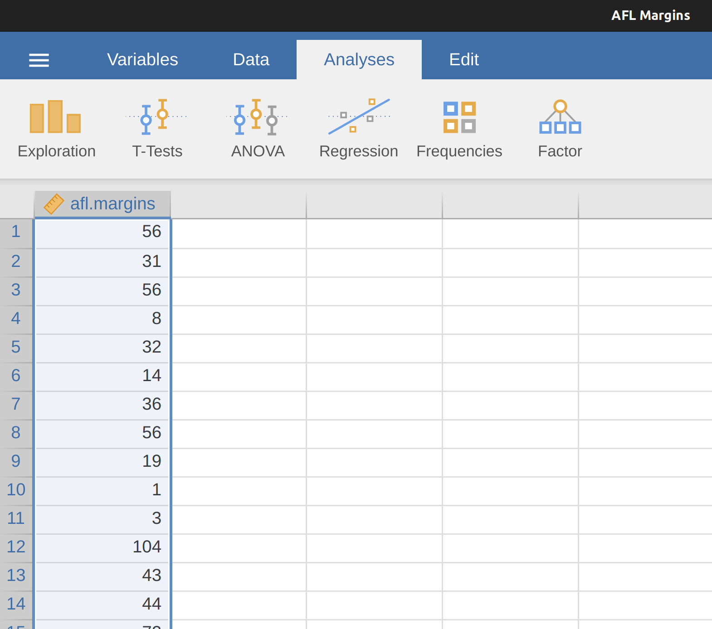
4 描述統計
每件統計分析工作的第一步都是將資料整理成簡約易讀的格式，讓任何人都能了解內含的重點資訊。這類整理工作就是描述統計的所有內涵。其實，很多人都將“統計”當成描述統計的同義詞，也是本章的學習主題。不過在介紹專用名詞之前，讓我們花點時間了解為何我們需要描述統計。請同學先開啟jamovi資料庫裡的示範檔案”aflsmall_margins”，以便稍後的解說。開啟畫面如同 Figure 4.1 。
這個檔案只有一個變項“afl.margins”。本章前半部都以這個變項做為示範，所以需要讓同學知道這個變項是什麼資料。這個變項的數值是來自澳洲足球聯盟(Australian Football League, 簡稱AFL)1紀錄的真實資料。“afl.margins”的數值是2010年球季，各場例行賽的勝隊得分。
你無法從試算表裡的數值讀出任何資訊，單純地“看資料”並不是解讀資料的有效方法。為了解讀資料中的訊息，同學們需要學習這一章介紹的統計量數，以及 Chapter 5 介紹的統計圖。統計量數與統計圖是描述統計最容易學的主題，那我們就先看一看 Figure 4.2 的直方圖，了解如何用描述統計形容資料。 Section 5.1 會有關於直方圖的更多介紹，現在先透過直方圖，解讀”afl.margins”變項透露什麼資訊。
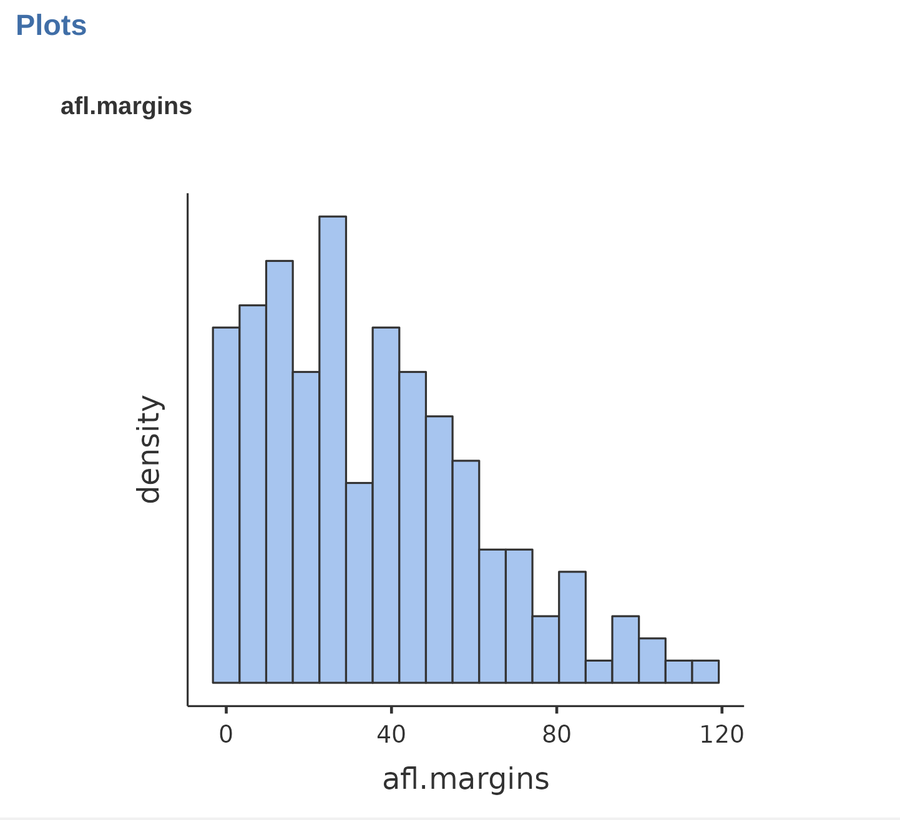
4.1 集中量數
如同 Figure 4.2 展示的統計繪圖，是一種向人展現資料“要點”的絕佳方式。統計圖在精鍊資料為簡化的”總成”統計資訊相同有用。在許多實務場合的統計工作，首先要做的總成統計是計算集中量數。 也就是要呈現資料裡的“平均值”或“中位數”。以下依序介紹最常見的平均值、中位數、以及眾數，還有說明這些量數的用途。
4.1.1 平均值
一組資料的平均值通常指算術平均值。計算方法是將所有數值加起來，除以數值的數目。以下是拿AFL資料前五場比賽勝隊得分56, 31, 56, 8, 32，代入公式計算的平均值：
\[ \frac{56 + 31 + 56 + 8 + 32}{5} = \frac{183}{5} = 36.60 \]
會用這本書學習統計的同學應該對以上定義耳熟能詳。平均值(也稱平均數)在許多日常場合都會用到。儘管很多同學都熟悉如何計算，在此我們用這套公式學習一些統計學家常用的數學記號，這樣能讓我們了解如何使用jamovi進行算術運算。
首先來認識數學記號\(N\)(大寫N)，用於表示要計算平均值的觀察值個數(以上的例子 \(N = 5\))。接著是表示一組觀察值的記號，慣例用大寫X表示，再加上底標數字記號就代表個別觀察值。也就是說，\(X_1\)是第一筆觀察值，\(X_2\)是第二筆觀察值，以此類推\(X_N\)是最後一筆觀察值。觀察值記號用比較抽象簡化的方式使用，\(X_i\)是資料裡的第i筆觀察值。為了幫同學了解符號的用法，我們將afl.margins的前五場比賽紀錄，連同數學記號整理在表4-1。
| 觀察值資訊 | 數學記號 | 觀察值數值 |
|---|---|---|
| 勝隊得分。第1場 | \(X_1\) | 56分 |
| 勝隊得分。第2場 | \(X_2\) | 31分 |
| 勝隊得分。第3場 | \(X_3\) | 56分 |
| 勝隊得分。第4場 | \(X_4\) | 8分 |
| 勝隊得分。第5場 | \(X_5\) | 32分 |
[更多技術細節2]
4.1.2 平均值計算示範
好啦，以上是純數學的說明，那要如何使用jamovi幫我們完成計算工作？特別是資料變項有成千上百個觀察值，還是使用電腦計算平均值比較簡單。第一步是點選Analysis面板上的’Exploration’按鈕，再點選’Descriptives’，就會出現如同 Figure 4.3 的選單畫面。要完成如同畫面中顯示的結果，只要點選左邊方框裡的afl.margins，將變項移動到”Variables”方框裡，馬上就能在報表介面看到顯示統計量數的表格。請同學自行試看看能否得到一樣的結果。
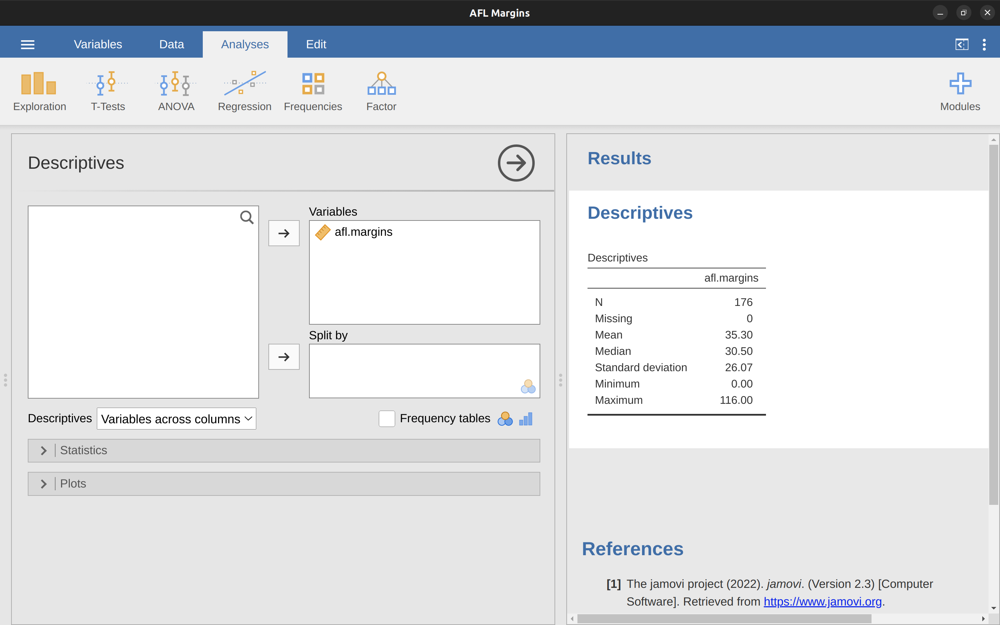
Figure 4.3 的報表顯示變項afl.margins的平均值是35.30。其他一起呈現的資訊有比賽場次數目(N = 176)，遺漏值數目(無)，以及中位數、最小值、最大值。
4.1.3 中位數
第二種常見的集中量數是中位數，計算方式甚至比平均值更簡單。中位數就是一組觀察值排序在中間的數值。以下同樣用AFL前五場比賽紀錄：\(56\), \(31\), \(56\), \(8\), \(32\)說明如何計算中位數。首先將所由數值由小到大升冪排序：
8, 31, 32, 56, 56
表面看來，以上五個數值的中位數是32，因為這個數值剛好排在中央位(以粗體字標示)。但是如果要整理的是前六場比賽紀錄的話呢？由於第6場比賽的勝隊得分是14，排序的數列如下：
8, 14, 31, 32, 56, 56
位在中間的數值有兩個，31與32。中位數就變成兩個數值的平均，也就是31.5。就像前面的例子，到這裡我們都可以用手計算。但是在真正的統計實務裡，我們不可能排序所有數值再找出中位數，還是要使用電腦完成繁複的工作。就像 Figure 4.3 的示範，jamovi已經算出afl.margins變項所有數值的中位數是30.50。
4.1.4 應該要計算平均值還是中位數?
只知道怎麼計算平均值與中位數還不能下課。我們還要知道這兩種量數指出了一組資料的什麼特徵，這也能讓我們曉得各自的正確使用時機。請看 Figure 4.4 的圖解。平均值顯示一筆資料的“重心”；中位數則是一筆資料的“中心點”。這也就是說，要用那種量數描述資料特徵，要看資料的種類，以及解釋這筆資料的目的是什麼。以下是簡要原則：
- 名義尺度(nomral scale)資料不應使用平均值或中位數。因為兩種量數的計算要有意義，都有資料數值有大小順序的條件。如果數值之間的大小順序不明確，最好使用眾數。
- 次序尺度(ordinal scale)資料應使用中位數而非平均值。中位數只會表示資料的順序資訊，不會指出數值間的差異比例。收集次序尺度資料之前已經知道不需測量觀察值之間的差異。只有測量尺度包括數值之間的差異時，才能使用平均值表現資料特徵。
- 等距(interval)與等比(ratio)尺度資料都能使用平均值表達資料特徵。實際使用那一種尺度，全賴實務目的。平均值能掌握這類尺度測量的觀察值所有資訊特徵。不過請切記，平均值對於位於極端、遠離重心的數值非常敏感。
關於最後一條，我們再多談一些。如 Figure 4.4 的圖解，資料直方圖呈現非對稱時，平均值與中位數必定是不一樣的值(見偏態與峰度)。圖中右邊的直方圖內的中位數接近資料密集的“軀幹”，左邊的直方圖內中位數則落在資料稀少的”尾巴“。用實際的例子來說，有三位朋友同桌聚會，Bob年收入有50,000澳幣、Kate年收入有60,000澳幣、Jane年收入有65,000澳幣。三人的收入平均值是58,333澳幣，中位數是60,000。接著年收入高達100,000,000澳幣的Bill加入他們，平均值馬上提高到25,043,750澳幣，不過中位數只有升到62,500澳幣。你也許會覺得這一桌朋友的總收入應該能用平均值總結，但是考慮到只有四人，中位數也許是更好的選擇。
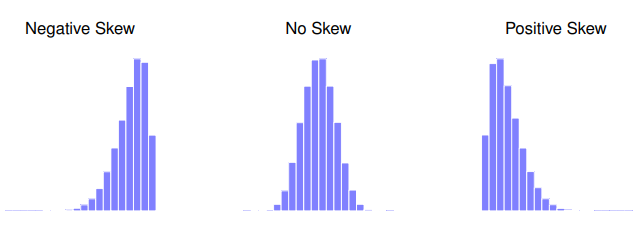
4.1.5 真實案例
為了弄清楚為什麼你需要注意平均值和中位數的區別，讓我們看一個現實生活中的例子。雖然我喜歡看媒體記者因為缺乏科學和統計知識而鬧的笑話，有好報導還是應該給予讚揚。請看2010年9月24日澳洲廣播公司新聞網站的這篇優秀報導3：
在過去的幾個星期，澳大利亞聯邦銀行的資深高層到世界各地旅行，準備了一份簡報說明與發達程度接近的國家相比，澳大利亞房價及主要價格收入比率比較有利。『實際上過去五、六年，澳大利亞的住宅負擔能力出現偏差』聯邦銀行的首席經濟學家Craig James說道。
這對於任何有按時付房貸，想要申請房貸，支付租金，或對於過去幾年澳大利亞房地產市場發生的事情全然不知情的民眾來說是重大消息。讓我們繼續看下去：
澳大利亞聯邦銀行以圖表、數字還有比較各國狀況，反擊房屋末日論。銀行官員用這份簡報裡的數據，否定與澳大利亞一般家庭收入比較，住宅負擔相對昂貴的論點。簡報裡提到澳洲主要城市的房屋價格與家庭收入的比值為5.6，全國平均為4.3，與其他已開發國家的城市相比，美國舊金山和紐約的比值都是7，紐西蘭奧克蘭6.7，加拿大溫哥華9.3。
聽起來很棒! 不過這篇報導接下來評論了簡報內容：
許多分析家指出聯邦銀行誤用了圖表及數字，做出的結論是錯誤的。看一下簡報第四頁的表格，表格註腳提到其他國家的數值是來自一個網站——國際住宅負擔調查報告。然而，如果聯邦銀行也引用該網站對澳大利亞房價與收入比值的分析，數字應該是9，而不是5.6或4.3。
嗯，出現一個相當嚴重的歧異。一群專家說是9，另一群專家說是4或5。我們能說雙方都有理，宣稱真實數字就在兩者之間？絕對不行！房價和收入的調查結果只會有一個。正如報導接著指出，國際住宅負擔調查報告的數字是正確的，澳洲聯邦銀行提供的數字是錯誤的：
澳洲聯邦銀行提供的國內房價與收入數字存在一個明顯的問題，他們比較的是收入平均值與房價中位數（國際住宅負擔調查報告比較的是收入中位數與房價中位數）。中位數是數據資料中間的點，能有效剔除了最高數值和最低數值，這意味著當涉及到收入和資產價格時，平均值會被拉高，因為整體收入數據包括澳大利亞最有錢的人。換句話說：聯邦銀行計算的收入數據包括執行長拉爾夫-諾里斯（Ralph Norris）的數百萬美元年薪，但是沒有把他的豪宅算在房產價格數據裡，因此低估了澳大利亞中產受薪階級的房價與收入比。
這段報導還是我自己(原作者)來寫好了。“(簡單說，)國際住宅負擔調查報告的比值計算方式是正確的，但是聯邦銀行的算法是錯的。”至於為什麽經常處理複雜數據的大銀行會犯這種低級錯誤，嗯…我沒什麼話可說，因為我對這間機構沒什麼了解。不過這篇報導剛好提到一個事實，可能與銀行出這種包有關，也可能無關:
作為澳大利亞最大的房屋貸款機構，房價上漲會讓聯邦銀行有最大獲益。全澳大利亞大多數購屋族以及小型企業都是向聯邦銀行貸款。
同學們，這就是社會現實呀！
4.1.6 眾數
從一組樣本找出眾數非常容易，就是個數最多的數值是也。我們用另一個AFL資料變項說明：那個球隊在歷年季後賽出場次數最多？請參考 Figure 4.5 開啟AFL Finallist這個檔案，看一下變項afl.finalists。這個變項的數值是包括1987到2010年200場季後賽的400支球隊隊名。
大家可以直接掃過全部400項，然後計數每支球隊的出場次數，如此能製造一張次數表(frequency table)。不過這樣的工作相當耗神且無聊，還是交給電腦吧。同樣也是點選開啟”Exploration”的“Descriptives”選單，這次要勾選”Frequency tables”這個方塊。如同 Figure 4.6 的示範。
從次數表可以看到，在這24年的季後賽，Geelong隊的出場次數遠多其他球隊，所以變項afl.finalists的眾數是Geelong。眾數說明Geelong(39次)是1987到2010季後賽出場最多的球隊，也能看到”Descriptives”表格並沒有呈現平均值、中位數、最小值、還有最大值。這是因為變項afl.finalists是名義尺度資料，無法計算這些量數。
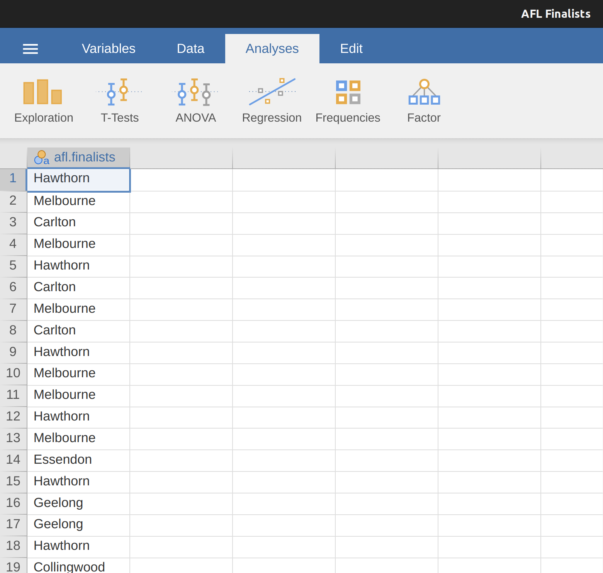
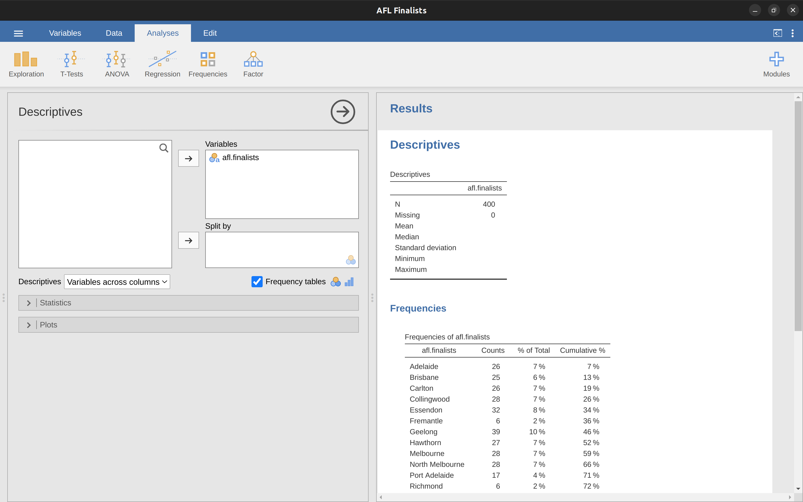
關於眾數還有一點要了解。儘管眾數常用來計算名義尺度資料的集中量數，是因為這類資料無法計算平均值和中位數，還是有些情況是不論資料尺度是什麼，我們都想知道眾數。我們回頭看前面的示範資料變項afl.margins，這是等比尺度變項，通常我們用平均值或中位數代表這筆資料的集中量數。不過想想這個情況：某天你的朋友想買運動彩卷賭下一場比賽的勝隊是幾分。若是不知道下一場是那隊出賽，只能隨便猜任何一個贏球分數。如果賭對了就能拿到50澳幣，賭輸了買彩卷的一塊就沒了。彩卷規則沒有所謂的“幾乎猜中”，只能賭勝隊實際會贏幾分。這時平均值或中位數都不能幫你朋友做決定，只有眾數才有參考價值。這時可以回到afl.margins的jamovi檔案，我們在”Exploration”的“Descriptives”選單勾選”Mode”，就能在描述統計報表看到眾數是3，如同 Figure 4.7 的示範。
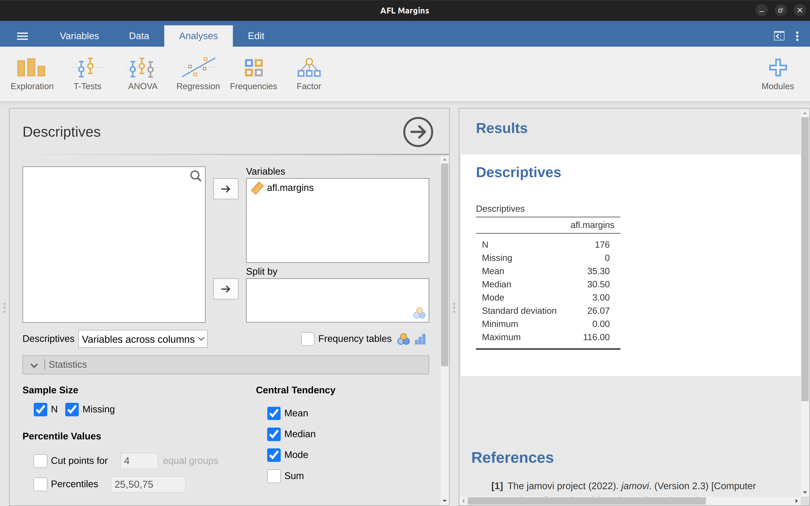
4.2 變異量數
至此有關集中量數的說明先告一段落。除了資料的“中心點”或“次數最多”的部分，描述統計也要說明資料的變異程度(variability)。像是資料有多“離散”？測量到的數值離平均值或中位數有多遠？這一節的只有談等距或等比尺度資料的變異量數，所以繼續使用afl.margins資料示範，還有說明各種變異量數的優缺點。
4.2.1 全距
計算變項資料的全距非常容易，就是最大值減去最小值。以AFL勝隊得分的例子來說，最大值是116，最小值是0。儘管全距是所有變異量數裡計算方法最簡單，卻也是最不可靠的。還記得平均值的說明曾提到，統計量數最好要穩定(robust)。如果變項資料裡有一兩個極端數值，會影響全距的大小。就像以下數列有個非常極端的數值：
-100, 2, 3, 4, 5, 6, 7, 8, 9, 10
很明顯這筆資料的全距完全被極端值主宰：沒有去掉極端值的全距是110，但是移除之後變成8。
4.2.2 四分位數間距
四分位數間距(interquartile range)類似全距，不過是改成計算資料內位於25%與75%兩個百分位數之間的差異。若是同學還不知道什麼是百分位數(percentile)，可以想成一筆資料x的10%百分位數，是資料內小於這個數值的比例佔10%。其實前面我們就已經學過這個概念，因為中位數就是50%百分位數！jamovi的預設描述統計功能可以直接算出一筆資料的25%、50%、75%三個百分位數。請在jamovi描述統計選單內勾選“Quartiles”的選項試試看。
Figure 4.8 展示的50%百分位數與中位數毫不意外是相同的。同時也能得到2010年AFL勝隊得分的IQR是37.5 (50.50 - 12.75 = 37.75)。理解IQR的簡單方式是：這個數值代表一筆資料“中間一半”跨越的範圍。小於25%百分位數的四分之一數值，以及大於75%百分位數的四分之一數值都在這“中間一半”之外。只有IQR內的數值在這段範圍之內。
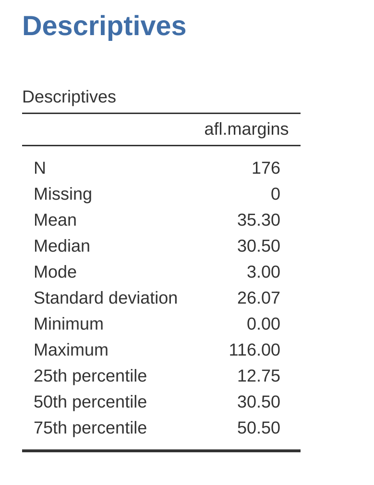
4.2.3 平均絕對差
全距與IQR都是利用資料內的百分位數，估計資料的變異程度。不過這不是估計變異程度的唯一方法。另一種方法是先決定一個有意義的參考點(像是平均值或中位數)，再計算整筆資料與參考點的“典型”差異值。那麼，什麼是“典型”差異值？通常是總和所有資料與參考點的差異值。實務上有兩種變異量數可用：“平均絕對差”(mean absolute deviation，平均值是參考點)與“中位絕對差”(median absolute deviation，中位數是參考點)。就原作者研讀過的書藉，“中位絕對差”是較理想的變異程度評估指標，不過心理學領域不常見到。
經過前一段的提要，我們來看看如何計算平均絕對差。同樣透過手算AFL勝隊得分來學習，就用前五場得分紀錄56, 31, 56, 8, 32來示範計算步驟。之前我們已經算出平均值是36.6 (記為 \(\bar{X} = 36.6\) )。每個數值減去平均，可以得到個別的差異值( 記為 \(X_i - \bar{X}\) )，接著取每個差異值的絕對值( 記為 \(\mid X_i - \bar{X} \mid\) )。建議同學按步驟照著表4-2 依序紀錄計算結果4。
| 口語 | 符號 | 數值 | 離均差 | 離均差絕對值 |
|---|---|---|---|---|
| 符號 | \(i\) | \(X_i\) | \(X_i - \bar{X}\) | \(|X_i - \bar{X}|\) |
| 1 | 56 | 19.4 | 19.4 | |
| 2 | 31 | -5.6 | 5.6 | |
| 3 | 56 | 19.4 | 19.4 | |
| 4 | 8 | -28.6 | 28.6 | |
| 5 | 32 | -4.6 | 4.6 |
現在只要計算所有差異值的絕對值，就是平均絕對差。
\[ \frac{19.4 + 5.6 + 19.4 + 28.6 + 4.6}{5} = 15.52 \]
至此我們算出5個數值的平均絕對差是15.52。
[其他技術細節5]
4.2.4 變異數
雖然平均絕對差有其用處，但是並非評估變異程度的最好指標。從數學原理的角度來看，差異值平方比差異值絕對值是更合適的指標。這裡介紹的變異數(variance)會省去許多統計細節6，主要著墨討論心理學研究累積的巨大缺陷。首先我們定義一筆資料(\(X\))的變異數記號是 Var(\(X\))，通常也被寫成 \(s^2\)，其中原因之後會說明。
[更多技術細節7]
有了基本概念，就用實際資料熟悉變異數的運算。同樣用AFL前五場比賽紀錄練習，請同學用前一節計算平均絕對差異步驟，完成表4-3的手算步驟8。
| 口語 | 符號 | 數值 | 離均差 | 離均差平方 |
|---|---|---|---|---|
| 符號 | \(i\) | \(X_i\) | \(X_i - \bar{X}\) | \((X_i - \bar{X})^2\) |
| 1 | 56 | 19.4 | 376.36 | |
| 2 | 31 | -5.6 | 31.36 | |
| 3 | 56 | 19.4 | 376.36 | |
| 4 | 8 | -28.6 | 817.96 | |
| 5 | 32 | -4.6 | 21.16 |
最後一欄是五筆資料的差異值平方，接著依公式用手或計算機計算平均，我們會得到變異數是\(324.64\)。好像大功告成了是不是？那這樣的變異數代表什麼意思？進一步解釋前，請用jamovi計算看看，建議重新匯入afl.margins資料變項，並且設定只計算前五項紀錄，然後開啟描述統計模組選單，這次要增加勾選”Variance”計算變異數(見 Figure 4.9 )，然後你會發現jamovi的計算結果是\(405.80\)，難到表4-3* 的計算步驟是錯誤的？
其實按公式筆算是正確的，jamovi的計算也沒問題9。解釋jamovi用什麼公式計算變異數很簡單，但是為什麼jamovi要用這個公式就需要花點功夫說明。我們先了解jamovi用什麼公式。前面提到的變異數公式是差異值平方總和除以資料個數\(N\)，不過jamovi計算的變異數是除以\(N - 1\)。
[更多技術細節10]
那麼為什麼jamovi是用 \(N - 1\)而非 \(N\)？畢竟變異數是差異值平方的平均不是嗎？為何不是用資料數值個數\(N\)做為分母呢？這樣想雖然沒有錯，不過在 Chapter 8 我們會討論“描述樣本”與“根據樣本推測母群性質”兩種統計操作的區別。平均數的計算方法在“描述樣本”與“推測母群性質”都是一樣的。但是對於變異數、標準差、還有許多估計變異程度的量數，“樣本“與”母群”的計算方法是不一樣的。正在學習的同學們從這裡開始，必須察覺多數統計實務計算的變異數其實是樣本變異數。樣本只是揭露真實世界的一部分而己。這一章學習的描述統計方法其實是“整理樣本的方法”，真實目的是要要估計“母群參數”。不過這樣的轉念對很多同學來說可能要求太高了，我們先接受jamovi計算的統計量數都是正確的，到了 Chapter 8 我們會再回來討論這些問題。
好啦，這一節讀起來有些像是燒腦的偵探小說。先請同學們擱置具體理由，接受只要是用jamovi計算的變異數都是用\(N-1\)除以平方差總和的結果。不過還有一件事需要討論：怎麼解讀變異數的意思？描述統計的功能畢竟是用數字說明資料裡的故事，而且變異數就明明白白的顯示在報表上。但是目前還不能直接用變異數解釋資料的變異程度，原因在於變異數是總計差異值的平方，而任何數值平方之後，就失去測量尺度的數值差異。就拿表4-3紀錄的第一場比賽分數，差異值平方是\(324.64\)來說，這個數字無法說明這筆資料與平均值的差異究竟有多大，因為平方後的數值喪失了原來測量尺度的意義。另外，你也可以想想看，你知道了全班同學的身高平方總和有什麼意義？
4.2.5 標準差
若是同學學到了這裡，應該都能接受變異數的數學特性，不過要撰寫人類看得到的報告，我們還是要呈現能具體描述變異程度的量數。那要怎麼改造變異數呢？方法很簡單，就是將變異數開根號取得標準差(standard deviation)。統計學術語還有“差異平均值之平方根”(mean squared deviation)，或者簡稱RMSD。標準差的數值能以資料尺度解釋變異程度。以AFL資料的實務報告來說，通常會寫“標準差18.01”而不是”變異數324.68“。專業報告規範會提示樣本資料的標準差寫法，像是用小寫s，sd，還有“std dev”等。
[更多技術細節11]
不過在前一節變異數的介紹中，我們已經知道jamovi使用的樣本變異數計算公式是除以 \(N - 1\)，所以樣本標準差同樣是來自這個公式計算結果的開根號。
[更多技術細節12]
使用標準差解讀變異程度的數學原理很複雜，在此先學一套簡單的規則：一筆資料裡與平均值相差一個標準差的資料大約佔68%；相差兩個標準差的資料大約佔95%；相差三個標準差的資料大約佔99.7%。只要資料繪制出的直方圖接近對稱或”鐘形曲線“，大致能用這套規則解讀資料的變異程度。但是從AFL資料的直方圖( Figure 4.2 )來看，似乎不大適用這套規則。根據 Figure 4.10 的解說，實際上只有65.3%的得分紀錄，落在AFL資料平均值的前後一個標準差之內。
4.2.6 應該用那種變異量數?
這一節學到了幾種變異量數：全距，四分位數間距，平均絕對差，變異數，以及標準差。各種量數優缺點不同，以下做個小結：
全距 呈現資料的完整變異範圍。極端值無可避免地會決定全距數值大小，除非我們在意資料裡的極端值，報告全距才有用處。
四分位數間距 呈現資料中間一半涵蓋的範圍。數值穩定且與中位數互補。多數研究者愛用。
平均絕對差 呈現所有資料遠離平均值的平均距離。容易解讀但是有些這一節未談到的問題，讓這項量數比較不如標準差受歡迎。研究文獻中不常見到。
變異數 呈現所有資料遠離平均值的平均距離的平方。在數學意義上能優雅解釋資料與平均值的變異，但是因為尺度單位改變，導致不易解讀。除非有數學工具不然不常在報告裡呈現，不過許多統計軟體的後台程序都會計算變異數。
標準差 變異數的開根號。具備同樣的數學特性，但是保留測量尺度所以容易解讀。平均值做為集中量數的報告時常搭配呈現，是最常在研究文獻裡看到的變異數數。
簡而言之，四分位數間距與標準差是最容易解讀而且最常見的變異量數。不過其他量數也有適用的時機。在此介紹以備同學們說不定那一天會真的用到。
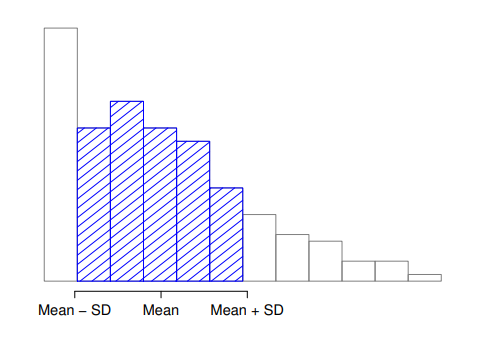
4.3 偏態與峰度
有些心理學文獻還會報告兩項描述統計項目：偏態(skew)與峰度(kurtosis)。實務上任何一項出現在報告裡的機會，都不比以上討論過的集中量數與變異量數。偏態稍微重要，所以會在某些領域的文獻經常看到(例如反應時間的測量)，峰度則相當罕見。
在此我們多認識一些偏態在解讀資料的意義。偏態是解釋資料不對稱程度的最常用指標。以 Figure 4.11 的展示來看，負偏態是多數資料的數值偏高所造成；而正偏態則是多數資料的數值偏低才會出現的現象。因此一筆資料大於平均值的數值佔多數，分析者會自然想到資料分佈是正偏態，偏態指數會是正值；相反的情況就會是負偏態，偏態指數會是負值。資料是對稱分佈的偏態指數則為0。
[更多技術細節13]
同學們也可以使用jamovi計算偏態，同樣在描述統計模組選單就有”skweness”可以勾選。資料變項afl.margins的偏態指數是0.780。使用偏態指數除以標準誤(Std. error)得到的數值，可以表示一筆資料的“偏態程度”。有個簡易判斷法則(特別是個數少於50的資料)：這個數值小於或等於2低表示偏態並不明顯，大於2就表示偏態程度會影響統計分析的結果。雖然這樣的判斷法則還不是學界共識，不過AFL的這筆資料偏態程度是 \(\frac{0.780}{0.183} = 4.262\) 。
峰度的報告雖然相當罕見，不過還是值得了解一下。峰度指標是描述資料分佈曲線的寬窄程度，如同 Figure 4.12 的圖解，常態分佈曲線的峰度指數是0，峰度指數是正是負顯示曲線是低闊峰(左圖)或高狹峰(右圖)。
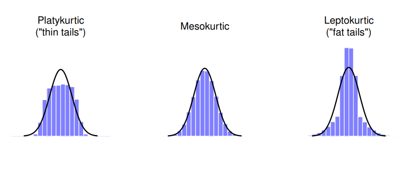
Figure 4.12 的左圖是平坦的資料分佈，稱為”低闊峰”是因為資料往雙側分佈而造成，峰度指數是負值。右圖的資料分佈兩側很寬，稱為”高狹峰”是因為資料往雙側分佈而造成，峰度指數是正值。中間的資料分佈不窄也不寬，所以稱為”常峰態”，峰度指數是0。 表4-4 整理三種峰度的稱呼與及指數數值說明：
| 口語 | 術語 | 峰度指數 |
|---|---|---|
| 分佈尾端太廋 | 低闊峰(platykurtic) | 指數為負值 |
| 分佈尾端均勻 | 常態峰(mesokurtic) | 指數為零 |
| 分佈尾端太肥 | 高狹峰(leptokurtic) | 指數為正值 |
[更多技術細節14]
最後不免俗地提醒同學，jamovi的描述統計模組選單有計算峰度“kurtosis”的選項，只要開啟就會在報表看到AFL資料變項的峰度是0.101，除以標準誤的話是0.364，嚴格來說不算是”高狹峰”。
4.4 分組描述統計
往後許多實例要根據某個分組變項，對其他變項進行分組描述統計。使用jamovi分組描述統計只是小菜一碟。例如根據臨床治療方式，對收集到的臨床試驗資料進行分組描述統計。在這一節我們用另一批資料學習。請開啟學習資料庫裡的”Clinical Trial”資料集，之後在 Chapter 12 會詳細這一批資料的來歷。開啟後的試算表介面如同 Figure 4.13 :
先看一下名義變項drug的數值：有安慰劑(placebo)，還有”anxifree”和“joyzepam”，三種藥各有六個受測者。另一個名義變項therapy代表治療方法，其中有九位受測者接受認知行為治療(CBT)，另外九位並未接受任何心理治療。比照之前的操作，在描述統計模組選單裡，單獨將連續尺度變項mood.gain放到Variables框裡，就會看到報表介面出現這個變項的平均值0.88。雖然我們還不知道這個變項的測量尺度是什麼意義，至少看起來能做些統計工作。
接著可以試試看分組描述統計，請將therapy放到”Split by”，並且勾選Std. deviation, Skewness, Kurtosis等項目，看看會不會出現如同 Figure 4.14 的結果。
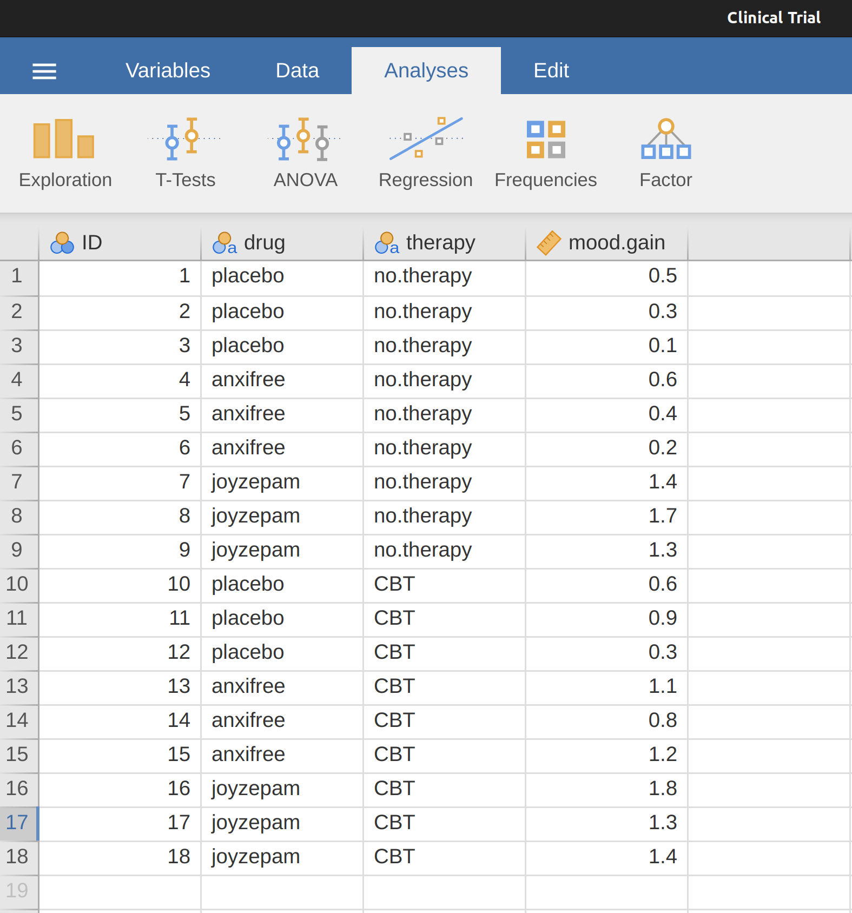
如果用不只一種分組變項會看到什麼結果呢？試試組合drug與theropy兩個變項的分組描述統計結果會是什麼。只要將drug放到”Split by”就知道了。分組描述統計的操作很容易，不過如果資料不多，分析結果很難說有什麼意義。有時候因為資料太少，報表會出現”NaN”或“Inf”等記號15。
4.5 標準分數
想像同學們今天一起做了一份“壞脾氣量表”，量表一供有50項二選一單選題，答“是”就得1分。假設這項量表已經有非常龐大的常模樣本，常模資料分佈相當接近常態分佈，平均得分為17分，標準差是5。今天某位同學的得分是35分，那麼他的壞脾氣程度有多少？也許有人會說可以用 \(\frac{35}{50}\) 或者 70% 代表這位同學的壞脾氣程度。但是想一想用這些數值代表一個人的壞脾氣都有點奇怪。只要編製測驗的人改一下題目敘述，受測者的答題反應就會改變，全部樣本的平均分數也會變高或變低。因此70%只是代表這位同學在某版本的壞脾氣量表得到的分數，所以得分比例並不能提供什麼有用的資訊。
比較這位同學的分數和其他人的分數，是個簡單的描述壞脾氣程度的方法。如果編製者的常模是收集了一百萬份樣本，只有159人的壞脾氣得分高於35分，也就是說這位同學的壞脾氣排序是前0.016%。這麼一來就比較能解釋資料了。轉換原始分數為可相對比較的分數，這種程序稱為“標準化”(standardisation)。將原始分數轉換為相對百分比相當簡單，但是百分比有個限制：如果常模樣本只有1000人，平均值是16，標準差是5，那麼35分是所有樣本得分的第一高分，無法說明這位同學的脾氣有多壞。
不過還不用絕望。我們可以將原始評量得分轉換為標準分數(standard score)，也是一般報告稱呼的z分數。標準分數的定義是原始分數與平均分數的差異相當於多少標準差。這句話可以寫成像以下的數學公式：
\[ \text{標準分數} = \frac{\text{原始分數} - 平均數}{\text{標準差}} \]
[更多技術細節16]
現在我們可以將這位同學的評量得分轉換為標準化壞脾氣分數。
\[ z =\frac{35 - 17}{5} = 3.6 \] 要解釋這個分數的意義，請回憶 Section 4.2.5 提到的簡易判斷法則：在常態分佈的資料中，比平均值大於3個標準差的數值，大約佔99.7%。所以3.6代表這位同學真的是位壞脾氣的人物。如果有興趣詳細探究，3.6代表在樣本中高於99.98%的受測者。
除了能了解原始分數在龐大樣本裡的相對高低，標準分數還有另一種有用的功能：可以比較同一位受測者的不同份量表分數。想像有這位同學後來做了另一份”外向度量表“，一共有24題。外向度量表的常模樣本平均值是13，樣本標準差是4，而這位同學的原始外向度得分是2。這個分數無法直接與他的壞脾氣量表得分35分，硬要比的話就變成拿蘋果和橘子比較了。
如果用標準分數就不同了。我們已經知道他的壞脾氣標準分數\((z = \frac{(35-17)}{5}=3.6)\) 還有外向度標準分數 \((z = \frac{(2-13)}{4}=-2.75)\)。兩項標準分數是指向原始數值在各自常模樣本的相對位置，才可以互相比較17。這位同學明顯比大多數人不外向(\(z = -2.75\))，脾氣也比大多數人壞 (\(z=3.6\))。而且標準分數的絕對值說明，這位同學給人壞脾氣的印象(\(3.6\))，明顯高於他不夠外向(\(2.75\))。我們能這樣斷言，是因為z分數是指出資料在變項代表的群體之間相對位置，如此才能比較不同變項的標準分數。
4.6 本章小結
任何資料分析作業都是從最基本的描述統計開始，而且比起推論統計學習門檻較低。因此本書比照其他教科書由描述統計開始。這一章的各主題有以下重點：
- 集中量數 集中量數顯示資料在幾何空間的所在位置。各種論文通常會報告平均值、中位數或眾數其中一種集中量數。
- 變異量數 變異量數顯示資料在幾何空間的離散範圍。常用的變異量數有全距、四分位數間距、平均絕對差、變異數、標準差。
- 偏態與峰度 分析作業也會關切變項資料分配的對稱程度(偏態)，以及寬窄程度(峰度)。
- 分組描述統計 分組統計是jamovi的基本功能，值得學習如何設定分組用變項。
- 標準分數 z分數放在這一章有些微妙，因為能用於描述統計，也能用於推論統計。請務必學好這一節的示範重點，之後的章節還會用到。
下一章我們將學習如何繪製統計圖，似乎是輕鬆有趣的單元。結束前我想提醒一點，傳統統計課給描述統計的講授時間比例，大約只有推論統計的1/8或1/9，這是因為後者內容比較複雜且難學。不過這樣的安排很容易讓同學輕忽安排易讀的描述統計，也是重要的實務工作。請切記…
不知道澳洲足球聯盟的同學不必擔心，即使不了解AFL規則，也不會影響使用這份資料學習描述統計。↩︎
建議初學的同學在紙上寫下幾種平均值的公式，才能加深印象。平均值的數學記號通常是 \(\bar{X}\) ，公式則寫成 \[\bar{X}=\frac{X_1 + X_2 ... + X_{N-1} + X_{N}}{N}\] 這樣寫雖然正確，但是太過冗長，所以通常會用連加符號 \(\sum\) \(^a\) 縮減公式。像是這個例子要連加五筆資料，寫成公式 \(X_1 + X_2 + X_3 + X_4 + X_5\) 看起來很長，使用連加符號就能簡化為 \[\sum_{i=1}^{5} X_i\] 。字面意思是”以i代表1到5，將每個 \(X_i\) 的數值加起來”。不過這和”連加前五筆數值“的意思還是不大一樣。雖然我們可以將這個公式擴展為適要任何狀況： \[\bar{X}=\frac{1}{N}\sum_{i=1}^{N}X_i\] 但是可能無法幫助數感不夠的同學了解平均值的概念。其實只要寫平均值的概念只要用幾個字表達就夠清楚：將一筆資料所有數值加起來再除以資料的數值個數。但是這本書的教學目的不光是要解釋概念，也要使用這本書的同學了解在本書以及jamovi的介面隨處可見的各種數學記號是什麼意思。請留意平均值公式裡的每個記號，之後每一章都會不斷遇到。這些記號不論出現在那裡，意思都是一樣的：\(\bar{X}\) 代表平值， \(\sum\) 代表連加一筆數值， \(X_i\) 代表第i個數值， \(N\) 代表一筆資料的數值個數。
—
\(^a\) 選用記號的理由 \(\sum\) 代表數值連加並不是沒有理由的，其實這是希臘字母 \(\sigma\) 的大寫，相當於英文字母的大寫 \(S\) 。也有另一個大寫希臘字母 \(\prod\) 代表數值連乘，這個字母的小寫就是代表圓周率的 \(\pi\) ，相當於英文字母的 \(P\) 。↩︎儘管平均絕對差的手算演練告一段落，還有一些事情要交待。我建議演練過程也要將公式寫出來，這樣子計算量數的數學公式意思才能記在心中。尤其是“平均絕對差”(mean absolute deviation)與”中位數絕對差“(median absolute deviation)的英文縮寫都是MAD，讀文獻時不注意的話會混淆。原作者建議“平均絕對差”的英文縮寫應該寫成AAD(average absolute deviation)，才能避免寫作與閱讀的問題。這個範例的公式與計算結果是： \[AAD(X) =\frac{1}{N} \sum_{i=1}^{N} \mid X_i - \bar{X} \mid = 15.52\]↩︎
有關變異數的眾多細節，在此特別要提一點，就是變異數是可加成的。假如現在有兩個變項 \(X\) 與 \(Y\)，各自的變異數是 \(Var(X)\) 與 \(Var(Y)\)。接著我們定義一個新變項 \(Z\) 是\(X\) 與 \(Y\)的加成，也就是 \(Z = X + Y\)，變項 \(Z\) 的變異數就等於 \(Var(X) + Var(Y)\)。這個特性在之後推論統計方法的學習非常有幫助，而且其他變異量數沒有相同的特性。↩︎
變異數的完整公式如下： \[VAR(X) =\frac{1}{N} \sum_{i=1}^{N} ( X_i - \bar{X} )^2 \] 基本上和平均絕對差幾乎一樣，除了每筆資料的離均差異值是以平方計算。這是為何變異數有時候又被稱為“平均平方差”。↩︎
也許還有第三種計算變異數的方法。↩︎
jamovi計算變異數公式的是： \[\frac{1}{N-1} \sum_{i=1}^{N} ( X_i - \bar{X} )^2\]↩︎
由於標準差是變異數的開根號，計算公式就是 \[s=\sqrt{\frac{1}{N} \sum_{i=1}^{N} ( X_i - \bar{X} )^2 }\] 在jamovi的描述統計選單裡，勾選’Variance’下方的’Std. deviation’，就能在報表介面看到176場得分資料的標準差 \(26.07\)。↩︎
到了 Chapter 8 我們會再來討論這個問題。請先記得jamovi計算的樣本標準差，數學記號寫作 \(\hat{\sigma}\) ，公式是 \[\hat{\sigma}=\sqrt{\frac{1}{N-1} \sum_{i=1}^{N} ( X_i - \bar{X} )^2}\]↩︎
偏態指數的常用公式是 \[skewness(X)=\frac{1}{N \hat{\sigma}^3} \sum_{i=1}^{N} ( X_i - \bar{X})^3\] 公式裡的 N 代表資料個數, \(\bar{X}\) 是樣本平均值， \(\hat{\sigma}\) 是樣本標準差 (分母是”\(N - 1\)” 的那一種)↩︎
峰度的計算公式很接近變異數與偏態，除了變異數是計算平方，偏態計算立方，峰度的公式要計算四次方： \(^b\) \[kurtosis(X)=\frac{1}{N \hat{\sigma}^4} \sum_{i=1}^{N} ( X_i - \bar{X} )^4 - 3\] 當然，大多數同學應該沒有太大興趣知道。
—
\(^b\) “-3”是校正用常數，確保常峰態的數值為0。在公式裡似乎畫蛇添足，其實背後有相當充分的數學原則。↩︎如果計算得到的數值太小或太大，jamovi會自動切換成以”指數模式”顯示。像是6.51e-4是代表簡化小數點後四位之前的0，所以這個數值的真面目是0.000651。如果是6.51e-4，代表簡化小數點前4位的0，所以這個數值的真面目是65,100.00。這種方式可以節省報表空間，想像6.51e-16的真實數值要寫多少0。↩︎
z分數真正的數學公式是 \[z_i =\frac{X_i - \bar{X}}{\hat{\sigma}}\]↩︎
任何統計學講師都會不厭其煩地提醒：變項A的標準差與變項B的標準差是不一樣的單位。同學可以運用常識想清楚z分數所代表的意義。↩︎